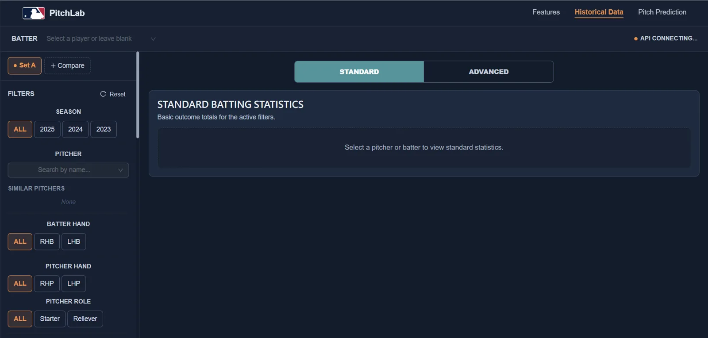

專案介紹
PitchLab 是一個以 MLB Statcast 逐球數據為基礎的棒球分析網站。使用者可以挑選投手或打者，依照球季、左右打、投手角色等條件篩選，查看標準與進階的打擊數據。
後端用 Python 處理數據，並以 FastAPI 提供 API；前端用 React 建立互動介面，讓數據分析不必寫程式，點選條件就能看到結果。
功能特色
- 歷史數據查詢：可篩選 2023～2025 球季
- 依投手、打者、左右手、先發／後援篩選
- Standard／Advanced 兩種數據檢視模式
- Compare 功能：比較不同條件的數據組合
- Pitch Prediction：預測投球結果
技術架構
- 資料處理：Python 整理 MLB Statcast 數據
- 後端：FastAPI 提供數據查詢與預測 API
- 前端：React 建立篩選與數據呈現介面
- 部署：Render
畫面截圖
